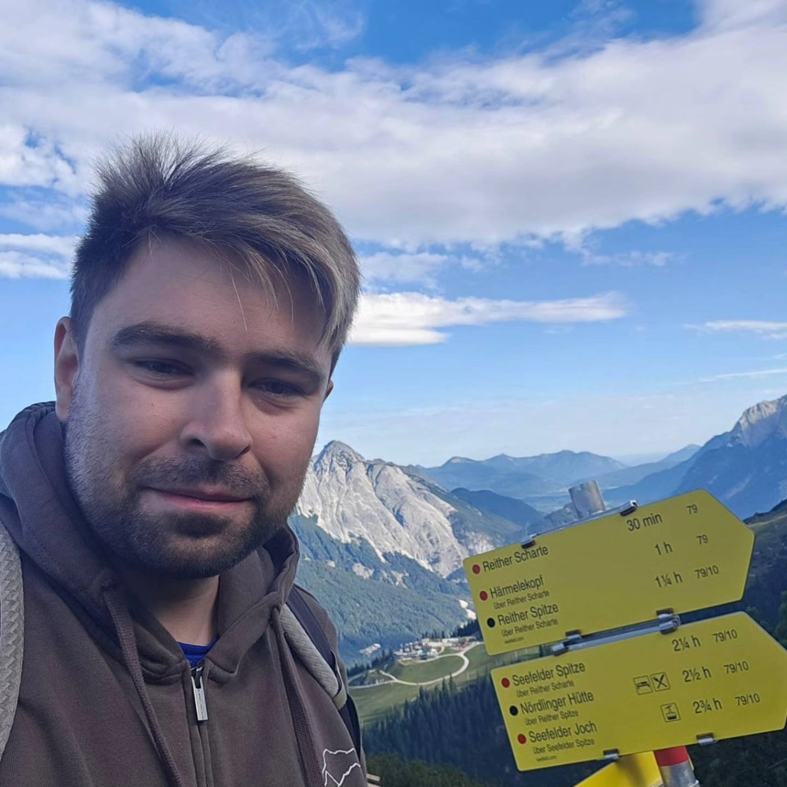

BB
Bartosz Bieganowski - Lab Leader
University of Warsaw
We study nonlinear partial differential equations, variational methods, critical phenomena and Hamiltonian dynamics — turning singular problems into rigorous mathematics.
An informal research laboratory connecting the Faculty of Mathematics and Computer Science at Nicolaus Copernicus University with the Faculty of Mathematics, Informatics and Mechanics at the University of Warsaw.
Our work follows the variational thread through problems from mathematical physics: finding ground states, understanding multiplicity, and tracking how geometry and symmetry shape solutions.

BBHow can variational and topological methods reveal solutions of elliptic problems when singularities come directly from a mathematical-physics model? The project studies singular variational problems, nonlinear Schrödinger equations and related critical phenomena.
This project connects nonlinear PDE research with AI-assisted formalization in the Lean proof assistant. It explores strongly indefinite Schrödinger equations with sign-changing nonlinearities, critical Hardy potentials and degenerate Grushin equations, while using automated proof search to test intermediate estimates and expose hidden assumptions. Accepted proof fragments would be checked by Lean’s trusted kernel and developed into reusable mathematical infrastructure.